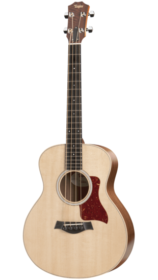
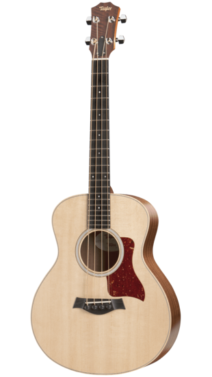

A little about me!
Welcome to my WEB110 Portal website! Here I will be applying the things I learn in WEB110 via a hosted site.
My preferred type of web development is a combination of design and programming. I first became interested in web development as I was looking for a powerful programming language to learn. I found JavaScript and really enjoyed the modules and overall syntax, since it was simple and intuitive. In addition to web development, I am interested in music, writing, and working out.
My development progress thus far has been mostly games made in HTML/CSS/JS. If you're interested, here's a game I made in 72 hours for Ludum Dare 41, free on Itch.io. I hope to learn a lot more about server-client interaction and web development conventions throughout this course! :)